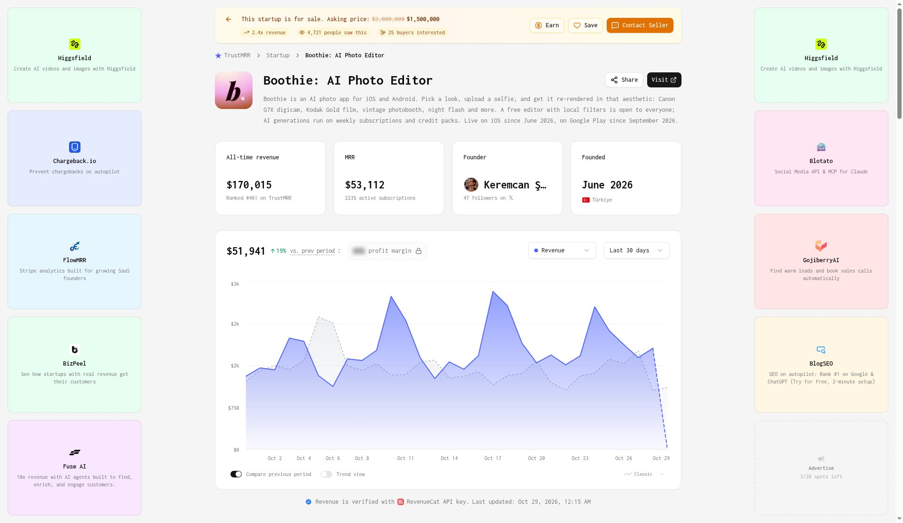
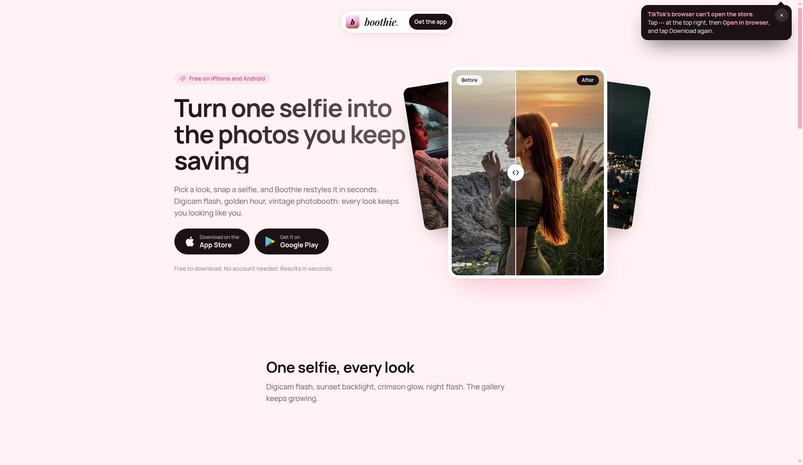

4 个月做出的 App 产品 Boothie 现在 MRR 5.3 万美元
产品干的事只有一件：选一个风格，传一张自拍，几秒钟后出一张同一张脸、同一身衣服，但像 2004 年用卡片机拍的照片。
风格有 Canon G7X 卡片机闪光、Kodak Gold 胶片、复古大头贴、夜间闪光、逆光。不用注册账号，目标用户是在 TikTok 和 Instagram 发图的年轻女生。
它为什么火，我觉得很好理解。CCD 卡片机的复古风正在流行，但真买一台旧卡片机又贵又不会拍。Boothie 把这件事变成三步，用户付钱只因为一个理由：好看，能发。
TrustMRR 上的数据（RevenueCat 核验，10 月 29 日更新）：
MRR 53,112 美元
2,235 个活跃订阅
近 30 天收入 51,941 美元，比上一周期涨了 19%
累计收入 170,015 美元


收费方式是免费本地滤镜拉新，AI 生成按周订阅，另外卖积分包。
创始人是土耳其的独立开发者，2026 年 6 月才上线 iOS，9 月上了 Google Play。
有一点要说清楚：TrustMRR 上这个项目挂着出售，页面写要价 150 万美元，原价是 200 万美元。
我自己的判断，它本质上就是一个提示词加一个风格库，加上一个非常准的趋势。技术上没什么门槛，门槛是你有没有踩中大家正想要的那个"感觉"。
我觉得现在不用等到有粉丝才能做产品，选对一个正在火的审美，一个人做一个月就可能有结果。
App官网在这里：https://boothieapp.com/
TrustMRR：https://trustmrr.com/startup/boothie